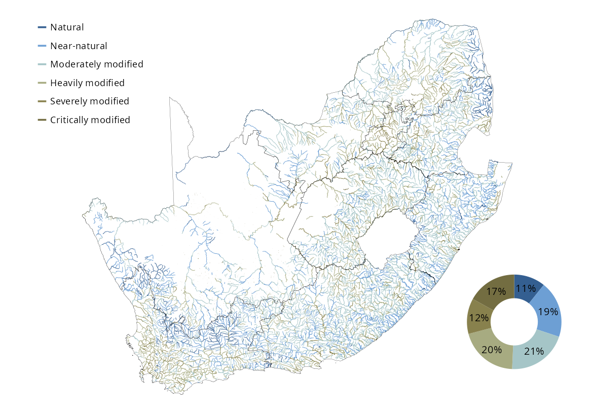

![]()

Rivers are among the most threatened ecosystems in South Africa, with over 60% of their extent in a compromised state. This has placed the vital services they provide and the incredible biodiversity they support at great risk.
25%
of river length
Natural or Near-natural
of river length
Natural or Near-natural
26%
of 222 river ecosystem types
Natural or Near-natural
of 222 river ecosystem types
Natural or Near-natural

| Natural | Near-natural | Moderately modified | Heavily modified | Severely modified | Critically modified | ||
|---|---|---|---|---|---|---|---|
| 10_N_L | Extent (km) | 0 | 0 | 2 | 0 | 0 | 0 |
| Percentage | 0 | 6 | 94 | 0 | 0 | 0 | |
| 10_N_M | Extent (km) | 6 | 20 | 21 | 2 | 0 | 1 |
| Percentage | 12 | 40 | 43 | 5 | 0 | 1 | |
| 10_N_U | Extent (km) | 1 | 24 | 110 | 5 | 0 | 2 |
| Percentage | 1 | 17 | 77 | 3 | 0 | 2 | |
| 10_P_L | Extent (km) | 0 | 34 | 231 | 103 | 0 | 10 |
| Percentage | 0 | 9 | 61 | 27 | 0 | 3 | |
| 10_P_M | Extent (km) | 0 | 52 | 83 | 13 | 0 | 0 |
| Percentage | 0 | 35 | 56 | 9 | 0 | 0 | |
| 10_P_U | Extent (km) | 0 | 203 | 566 | 101 | 0 | 31 |
| Percentage | 0 | 23 | 63 | 11 | 0 | 3 | |
| 11_N_F | Extent (km) | 0 | 0 | 52 | 124 | 68 | 16 |
| Percentage | 0 | 0 | 20 | 48 | 26 | 6 | |
| 11_N_L | Extent (km) | 0 | 622 | 2 582 | 1 167 | 294 | 91 |
| Percentage | 0 | 13 | 54 | 25 | 6 | 2 | |
| 11_N_M | Extent (km) | 0 | 13 | 24 | 21 | 4 | 2 |
| Percentage | 0 | 21 | 37 | 33 | 6 | 3 | |
| 11_N_U | Extent (km) | 0 | 528 | 1 813 | 662 | 233 | 120 |
| Percentage | 0 | 16 | 54 | 20 | 7 | 4 | |
| 11_P_F | Extent (km) | 0 | 298 | 2 008 | 1 930 | 175 | 230 |
| Percentage | 0 | 6 | 43 | 42 | 4 | 5 | |
| 11_P_L | Extent (km) | 0 | 879 | 4 508 | 2 061 | 750 | 236 |
| Percentage | 0 | 10 | 53 | 24 | 9 | 3 | |
| 11_P_M | Extent (km) | 0 | 16 | 49 | 17 | 6 | 1 |
| Percentage | 0 | 17 | 55 | 19 | 7 | 1 | |
| 11_P_U | Extent (km) | 3 | 366 | 1 432 | 660 | 206 | 83 |
| Percentage | 0 | 13 | 52 | 24 | 7 | 3 | |
| 12_N_F | Extent (km) | 0 | 3 | 0 | 0 | 0 | 0 |
| Percentage | 0 | 100 | 0 | 0 | 0 | 0 | |
| 12_N_L | Extent (km) | 136 | 14 | 0 | 22 | 0 | 7 |
| Percentage | 76 | 8 | 0 | 12 | 0 | 4 | |
| 12_N_M | Extent (km) | 1 | 18 | 0 | 1 | 0 | 0 |
| Percentage | 5 | 88 | 0 | 7 | 0 | 0 | |
| 12_N_U | Extent (km) | 85 | 161 | 0 | 17 | 0 | 2 |
| Percentage | 32 | 61 | 0 | 6 | 0 | 1 | |
| 12_P_F | Extent (km) | 0 | 15 | 3 | 9 | 0 | 0 |
| Percentage | 0 | 57 | 11 | 32 | 0 | 0 | |
| 12_P_L | Extent (km) | 18 | 39 | 0 | 31 | 18 | 6 |
| Percentage | 16 | 35 | 0 | 27 | 16 | 5 | |
| 12_P_M | Extent (km) | 0 | 2 | 0 | 0 | 0 | 0 |
| Percentage | 0 | 100 | 0 | 0 | 0 | 0 | |
| 12_P_U | Extent (km) | 0 | 13 | 0 | 9 | 0 | 1 |
| Percentage | 2 | 56 | 0 | 39 | 0 | 3 | |
| 13_N_F | Extent (km) | 0 | 43 | 3 | 15 | 0 | 0 |
| Percentage | 0 | 70 | 5 | 24 | 0 | 0 | |
| 13_N_L | Extent (km) | 6 | 60 | 4 | 23 | 0 | 0 |
| Percentage | 6 | 64 | 4 | 25 | 0 | 0 | |
| 13_N_U | Extent (km) | 0 | 10 | 2 | 4 | 0 | 0 |
| Percentage | 0 | 60 | 14 | 26 | 0 | 0 | |
| 13_P_F | Extent (km) | 0 | 31 | 135 | 120 | 217 | 0 |
| Percentage | 0 | 6 | 27 | 24 | 43 | 0 | |
| 13_P_L | Extent (km) | 0 | 10 | 111 | 78 | 12 | 0 |
| Percentage | 0 | 5 | 53 | 37 | 6 | 0 | |
| 13_P_M | Extent (km) | 0 | 2 | 3 | 0 | 0 | 0 |
| Percentage | 0 | 38 | 61 | 1 | 0 | 0 | |
| 13_P_U | Extent (km) | 0 | 19 | 45 | 25 | 0 | 0 |
| Percentage | 0 | 21 | 51 | 28 | 0 | 0 | |
| 14_N_F | Extent (km) | 0 | 0 | 1 | 25 | 0 | 0 |
| Percentage | 0 | 0 | 3 | 97 | 0 | 0 | |
| 14_N_L | Extent (km) | 0 | 43 | 227 | 42 | 0 | 0 |
| Percentage | 0 | 14 | 73 | 13 | 0 | 0 | |
| 14_N_M | Extent (km) | 0 | 31 | 18 | 5 | 0 | 0 |
| Percentage | 0 | 56 | 34 | 9 | 0 | 0 | |
| 14_N_U | Extent (km) | 19 | 186 | 226 | 23 | 0 | 5 |
| Percentage | 4 | 41 | 49 | 5 | 0 | 1 | |
| 14_P_F | Extent (km) | 0 | 126 | 264 | 56 | 0 | 27 |
| Percentage | 0 | 27 | 56 | 12 | 0 | 6 | |
| 14_P_L | Extent (km) | 55 | 684 | 1 192 | 277 | 52 | 33 |
| Percentage | 2 | 30 | 52 | 12 | 2 | 1 | |
| 14_P_M | Extent (km) | 3 | 158 | 130 | 13 | 0 | 1 |
| Percentage | 1 | 52 | 42 | 4 | 0 | 0 | |
| 14_P_U | Extent (km) | 65 | 1 384 | 1 236 | 203 | 19 | 11 |
| Percentage | 2 | 47 | 42 | 7 | 1 | 0 | |
| 15_N_F | Extent (km) | 0 | 0 | 6 | 0 | 0 | 0 |
| Percentage | 0 | 0 | 100 | 0 | 0 | 0 | |
| 15_N_L | Extent (km) | 0 | 53 | 214 | 199 | 6 | 1 |
| Percentage | 0 | 11 | 45 | 42 | 1 | 0 | |
| 15_N_M | Extent (km) | 18 | 54 | 55 | 19 | 0 | 0 |
| Percentage | 12 | 37 | 38 | 13 | 0 | 0 | |
| 15_N_U | Extent (km) | 0 | 140 | 471 | 257 | 0 | 6 |
| Percentage | 0 | 16 | 54 | 29 | 0 | 1 | |
| 15_P_F | Extent (km) | 0 | 69 | 223 | 283 | 22 | 2 |
| Percentage | 0 | 11 | 37 | 47 | 4 | 0 | |
| 15_P_L | Extent (km) | 7 | 485 | 1 108 | 517 | 64 | 9 |
| Percentage | 0 | 22 | 51 | 24 | 3 | 0 | |
| 15_P_M | Extent (km) | 117 | 298 | 197 | 38 | 2 | 0 |
| Percentage | 18 | 46 | 30 | 6 | 0 | 0 | |
| 15_P_U | Extent (km) | 120 | 921 | 1 044 | 198 | 18 | 4 |
| Percentage | 5 | 40 | 45 | 9 | 1 | 0 | |
| 16_N_L | Extent (km) | 0 | 21 | 18 | 0 | 0 | 1 |
| Percentage | 0 | 51 | 45 | 0 | 0 | 4 | |
| 16_N_M | Extent (km) | 3 | 16 | 36 | 0 | 0 | 0 |
| Percentage | 6 | 29 | 63 | 1 | 0 | 1 | |
| 16_N_U | Extent (km) | 1 | 56 | 141 | 6 | 0 | 1 |
| Percentage | 1 | 27 | 69 | 3 | 0 | 0 | |
| 16_P_F | Extent (km) | 0 | 26 | 229 | 122 | 20 | 20 |
| Percentage | 0 | 6 | 55 | 29 | 5 | 5 | |
| 16_P_L | Extent (km) | 9 | 448 | 2 739 | 780 | 70 | 30 |
| Percentage | 0 | 11 | 67 | 19 | 2 | 1 | |
| 16_P_M | Extent (km) | 11 | 176 | 452 | 88 | 4 | 2 |
| Percentage | 2 | 24 | 62 | 12 | 1 | 0 | |
| 16_P_U | Extent (km) | 70 | 1 442 | 4 155 | 917 | 28 | 17 |
| Percentage | 1 | 22 | 63 | 14 | 0 | 0 | |
| 17_N_M | Extent (km) | 0 | 0 | 2 | 0 | 0 | 0 |
| Percentage | 0 | 0 | 96 | 4 | 0 | 0 | |
| 17_N_U | Extent (km) | 0 | 0 | 2 | 0 | 0 | 0 |
| Percentage | 0 | 0 | 100 | 0 | 0 | 0 | |
| 17_P_F | Extent (km) | 0 | 12 | 2 | 21 | 1 | 0 |
| Percentage | 0 | 31 | 6 | 59 | 4 | 0 | |
| 17_P_L | Extent (km) | 41 | 347 | 871 | 161 | 37 | 4 |
| Percentage | 3 | 24 | 60 | 11 | 3 | 0 | |
| 17_P_M | Extent (km) | 1 | 29 | 66 | 12 | 3 | 0 |
| Percentage | 1 | 27 | 59 | 11 | 3 | 0 | |
| 17_P_U | Extent (km) | 22 | 657 | 986 | 265 | 60 | 6 |
| Percentage | 1 | 33 | 49 | 13 | 3 | 0 | |
| 18_N_F | Extent (km) | 0 | 1 | 2 | 5 | 0 | 0 |
| Percentage | 0 | 11 | 30 | 59 | 0 | 0 | |
| 18_N_L | Extent (km) | 0 | 287 | 884 | 297 | 74 | 19 |
| Percentage | 0 | 18 | 57 | 19 | 5 | 1 | |
| 18_N_M | Extent (km) | 1 | 238 | 305 | 70 | 3 | 4 |
| Percentage | 0 | 38 | 49 | 11 | 0 | 1 | |
| 18_N_U | Extent (km) | 2 | 1 799 | 3 141 | 742 | 60 | 71 |
| Percentage | 0 | 31 | 54 | 13 | 1 | 1 | |
| 18_P_F | Extent (km) | 0 | 0 | 15 | 0 | 0 | 0 |
| Percentage | 0 | 0 | 100 | 0 | 0 | 0 | |
| 18_P_L | Extent (km) | 0 | 342 | 1 145 | 750 | 167 | 16 |
| Percentage | 0 | 14 | 47 | 31 | 7 | 1 | |
| 18_P_M | Extent (km) | 2 | 20 | 39 | 23 | 0 | 1 |
| Percentage | 2 | 24 | 46 | 27 | 0 | 1 | |
| 18_P_U | Extent (km) | 11 | 263 | 586 | 330 | 3 | 3 |
| Percentage | 1 | 22 | 49 | 28 | 0 | 0 | |
| 19_N_F | Extent (km) | 0 | 1 | 6 | 2 | 0 | 0 |
| Percentage | 0 | 6 | 74 | 20 | 0 | 0 | |
| 19_N_L | Extent (km) | 5 | 204 | 337 | 210 | 31 | 6 |
| Percentage | 1 | 26 | 43 | 27 | 4 | 1 | |
| 19_N_M | Extent (km) | 103 | 169 | 125 | 50 | 12 | 1 |
| Percentage | 22 | 37 | 27 | 11 | 3 | 0 | |
| 19_N_U | Extent (km) | 383 | 1 111 | 1 335 | 625 | 47 | 21 |
| Percentage | 11 | 32 | 38 | 18 | 1 | 1 | |
| 19_P_F | Extent (km) | 0 | 2 | 63 | 84 | 2 | 2 |
| Percentage | 0 | 1 | 41 | 55 | 1 | 1 | |
| 19_P_L | Extent (km) | 18 | 323 | 620 | 726 | 244 | 22 |
| Percentage | 1 | 17 | 32 | 37 | 13 | 1 | |
| 19_P_M | Extent (km) | 17 | 86 | 127 | 112 | 39 | 1 |
| Percentage | 4 | 23 | 33 | 29 | 10 | 0 | |
| 19_P_U | Extent (km) | 47 | 396 | 664 | 775 | 207 | 16 |
| Percentage | 2 | 19 | 32 | 37 | 10 | 1 | |
| 1_N_F | Extent (km) | 0 | 15 | 23 | 6 | 0 | 0 |
| Percentage | 0 | 34 | 52 | 13 | 0 | 1 | |
| 1_N_L | Extent (km) | 0 | 165 | 491 | 34 | 0 | 5 |
| Percentage | 0 | 24 | 71 | 5 | 0 | 1 | |
| 1_N_M | Extent (km) | 0 | 0 | 6 | 1 | 0 | 0 |
| Percentage | 0 | 7 | 84 | 9 | 0 | 0 | |
| 1_N_U | Extent (km) | 21 | 412 | 211 | 58 | 0 | 6 |
| Percentage | 3 | 58 | 30 | 8 | 0 | 1 | |
| 1_P_F | Extent (km) | 0 | 216 | 833 | 428 | 0 | 1 |
| Percentage | 0 | 15 | 56 | 29 | 0 | 0 | |
| 1_P_L | Extent (km) | 2 | 295 | 528 | 175 | 0 | 4 |
| Percentage | 0 | 29 | 53 | 17 | 0 | 0 | |
| 1_P_M | Extent (km) | 0 | 5 | 0 | 0 | 0 | 0 |
| Percentage | 0 | 98 | 0 | 0 | 0 | 2 | |
| 1_P_U | Extent (km) | 0 | 22 | 11 | 27 | 0 | 0 |
| Percentage | 0 | 37 | 19 | 44 | 0 | 0 | |
| 20_N_F | Extent (km) | 0 | 0 | 26 | 11 | 0 | 0 |
| Percentage | 0 | 0 | 71 | 29 | 0 | 0 | |
| 20_N_L | Extent (km) | 0 | 28 | 118 | 151 | 12 | 1 |
| Percentage | 0 | 9 | 38 | 49 | 4 | 0 | |
| 20_N_M | Extent (km) | 0 | 8 | 13 | 9 | 1 | 0 |
| Percentage | 0 | 27 | 42 | 27 | 3 | 1 | |
| 20_N_U | Extent (km) | 0 | 94 | 312 | 183 | 19 | 3 |
| Percentage | 0 | 15 | 51 | 30 | 3 | 0 | |
| 20_P_F | Extent (km) | 2 | 1 | 105 | 96 | 98 | 0 |
| Percentage | 1 | 0 | 35 | 32 | 32 | 0 | |
| 20_P_L | Extent (km) | 7 | 116 | 77 | 212 | 152 | 2 |
| Percentage | 1 | 20 | 14 | 38 | 27 | 0 | |
| 20_P_M | Extent (km) | 22 | 39 | 33 | 35 | 0 | 0 |
| Percentage | 17 | 30 | 25 | 27 | 0 | 0 | |
| 20_P_U | Extent (km) | 111 | 236 | 172 | 324 | 24 | 5 |
| Percentage | 13 | 27 | 20 | 37 | 3 | 1 | |
| 21_N_F | Extent (km) | 0 | 0 | 17 | 2 | 4 | 1 |
| Percentage | 0 | 0 | 71 | 7 | 19 | 3 | |
| 21_N_L | Extent (km) | 483 | 1 080 | 1 402 | 381 | 32 | 16 |
| Percentage | 14 | 32 | 41 | 11 | 1 | 0 | |
| 21_N_M | Extent (km) | 195 | 150 | 95 | 36 | 3 | 0 |
| Percentage | 41 | 31 | 20 | 8 | 1 | 0 | |
| 21_N_U | Extent (km) | 1 790 | 2 724 | 2 231 | 392 | 48 | 31 |
| Percentage | 25 | 38 | 31 | 5 | 1 | 0 | |
| 21_P_F | Extent (km) | 0 | 0 | 0 | 0 | 0 | 3 |
| Percentage | 0 | 0 | 0 | 0 | 0 | 100 | |
| 21_P_L | Extent (km) | 68 | 98 | 227 | 130 | 56 | 19 |
| Percentage | 11 | 16 | 38 | 22 | 9 | 3 | |
| 21_P_M | Extent (km) | 2 | 2 | 0 | 0 | 0 | 0 |
| Percentage | 44 | 56 | 0 | 0 | 0 | 0 | |
| 21_P_U | Extent (km) | 13 | 36 | 36 | 5 | 24 | 0 |
| Percentage | 12 | 31 | 31 | 5 | 21 | 0 | |
| 22_N_L | Extent (km) | 0 | 0 | 35 | 268 | 17 | 0 |
| Percentage | 0 | 0 | 11 | 84 | 5 | 0 | |
| 22_N_M | Extent (km) | 0 | 3 | 8 | 28 | 2 | 0 |
| Percentage | 0 | 8 | 19 | 68 | 5 | 1 | |
| 22_N_U | Extent (km) | 0 | 20 | 79 | 339 | 30 | 4 |
| Percentage | 0 | 4 | 17 | 72 | 6 | 1 | |
| 22_P_F | Extent (km) | 0 | 23 | 184 | 138 | 22 | 0 |
| Percentage | 0 | 6 | 50 | 38 | 6 | 0 | |
| 22_P_L | Extent (km) | 0 | 5 | 206 | 638 | 107 | 15 |
| Percentage | 0 | 1 | 21 | 66 | 11 | 2 | |
| 22_P_M | Extent (km) | 0 | 19 | 42 | 68 | 13 | 1 |
| Percentage | 0 | 13 | 29 | 47 | 9 | 1 | |
| 22_P_U | Extent (km) | 0 | 56 | 151 | 393 | 30 | 4 |
| Percentage | 0 | 9 | 24 | 62 | 5 | 1 | |
| 23_N_F | Extent (km) | 0 | 0 | 0 | 0 | 2 | 0 |
| Percentage | 0 | 0 | 0 | 0 | 97 | 3 | |
| 23_N_L | Extent (km) | 0 | 4 | 1 | 31 | 33 | 1 |
| Percentage | 0 | 5 | 2 | 44 | 48 | 1 | |
| 23_N_M | Extent (km) | 63 | 13 | 11 | 25 | 8 | 1 |
| Percentage | 52 | 11 | 9 | 21 | 6 | 1 | |
| 23_N_U | Extent (km) | 107 | 53 | 74 | 122 | 48 | 5 |
| Percentage | 26 | 13 | 18 | 30 | 12 | 1 | |
| 23_P_F | Extent (km) | 14 | 13 | 28 | 38 | 20 | 2 |
| Percentage | 12 | 12 | 25 | 33 | 18 | 1 | |
| 23_P_L | Extent (km) | 65 | 111 | 192 | 174 | 105 | 1 |
| Percentage | 10 | 17 | 30 | 27 | 16 | 0 | |
| 23_P_M | Extent (km) | 31 | 83 | 91 | 98 | 29 | 2 |
| Percentage | 9 | 25 | 27 | 29 | 9 | 1 | |
| 23_P_U | Extent (km) | 141 | 242 | 313 | 228 | 176 | 20 |
| Percentage | 13 | 22 | 28 | 20 | 16 | 2 | |
| 24_N_F | Extent (km) | 0 | 0 | 0 | 33 | 10 | 0 |
| Percentage | 0 | 0 | 0 | 76 | 24 | 0 | |
| 24_N_L | Extent (km) | 10 | 0 | 2 | 282 | 139 | 3 |
| Percentage | 2 | 0 | 1 | 65 | 32 | 1 | |
| 24_N_M | Extent (km) | 5 | 6 | 9 | 45 | 14 | 2 |
| Percentage | 7 | 7 | 12 | 56 | 17 | 2 | |
| 24_N_U | Extent (km) | 5 | 0 | 53 | 221 | 141 | 9 |
| Percentage | 1 | 0 | 12 | 51 | 33 | 2 | |
| 24_P_F | Extent (km) | 3 | 0 | 80 | 176 | 50 | 9 |
| Percentage | 1 | 0 | 25 | 55 | 16 | 3 | |
| 24_P_L | Extent (km) | 0 | 0 | 54 | 380 | 120 | 1 |
| Percentage | 0 | 0 | 10 | 69 | 22 | 0 | |
| 24_P_M | Extent (km) | 13 | 5 | 7 | 43 | 11 | 1 |
| Percentage | 16 | 6 | 9 | 55 | 14 | 1 | |
| 24_P_U | Extent (km) | 6 | 4 | 21 | 247 | 118 | 3 |
| Percentage | 1 | 1 | 5 | 62 | 30 | 1 | |
| 25_N_F | Extent (km) | 0 | 22 | 0 | 2 | 0 | 0 |
| Percentage | 0 | 91 | 0 | 9 | 0 | 0 | |
| 25_N_L | Extent (km) | 153 | 336 | 148 | 129 | 31 | 1 |
| Percentage | 19 | 42 | 19 | 16 | 4 | 0 | |
| 25_N_M | Extent (km) | 4 | 12 | 9 | 16 | 1 | 0 |
| Percentage | 10 | 29 | 20 | 38 | 2 | 0 | |
| 25_N_U | Extent (km) | 310 | 360 | 139 | 122 | 33 | 2 |
| Percentage | 32 | 37 | 14 | 13 | 3 | 0 | |
| 25_P_F | Extent (km) | 0 | 0 | 65 | 171 | 0 | 0 |
| Percentage | 0 | 0 | 27 | 73 | 0 | 0 | |
| 25_P_L | Extent (km) | 4 | 64 | 104 | 21 | 0 | 0 |
| Percentage | 2 | 33 | 54 | 11 | 0 | 0 | |
| 26_N_F | Extent (km) | 3 | 270 | 169 | 70 | 4 | 35 |
| Percentage | 1 | 49 | 31 | 13 | 1 | 6 | |
| 26_N_L | Extent (km) | 220 | 1 799 | 3 060 | 791 | 23 | 127 |
| Percentage | 4 | 30 | 51 | 13 | 0 | 2 | |
| 26_N_M | Extent (km) | 6 | 31 | 46 | 10 | 0 | 0 |
| Percentage | 6 | 33 | 50 | 11 | 0 | 0 | |
| 26_N_U | Extent (km) | 337 | 1 134 | 2 172 | 485 | 6 | 90 |
| Percentage | 8 | 27 | 51 | 11 | 0 | 2 | |
| 26_P_F | Extent (km) | 0 | 161 | 781 | 1 221 | 393 | 306 |
| Percentage | 0 | 6 | 27 | 43 | 14 | 11 | |
| 26_P_L | Extent (km) | 9 | 567 | 730 | 739 | 125 | 11 |
| Percentage | 0 | 26 | 33 | 34 | 6 | 0 | |
| 26_P_M | Extent (km) | 0 | 0 | 0 | 3 | 1 | 0 |
| Percentage | 0 | 0 | 7 | 77 | 16 | 0 | |
| 26_P_U | Extent (km) | 0 | 23 | 41 | 100 | 21 | 4 |
| Percentage | 0 | 12 | 22 | 53 | 11 | 2 | |
| 27_N_F | Extent (km) | 0 | 3 | 0 | 0 | 0 | 0 |
| Percentage | 0 | 100 | 0 | 0 | 0 | 0 | |
| 27_N_L | Extent (km) | 314 | 348 | 51 | 23 | 0 | 2 |
| Percentage | 43 | 47 | 7 | 3 | 0 | 0 | |
| 27_N_M | Extent (km) | 8 | 57 | 26 | 3 | 0 | 0 |
| Percentage | 8 | 60 | 28 | 4 | 0 | 0 | |
| 27_N_U | Extent (km) | 284 | 495 | 216 | 56 | 0 | 3 |
| Percentage | 27 | 47 | 20 | 5 | 0 | 0 | |
| 28_N_L | Extent (km) | 59 | 18 | 22 | 0 | 0 | 0 |
| Percentage | 59 | 18 | 22 | 0 | 0 | 0 | |
| 28_N_M | Extent (km) | 0 | 2 | 17 | 3 | 0 | 0 |
| Percentage | 0 | 9 | 76 | 15 | 0 | 0 | |
| 28_N_U | Extent (km) | 8 | 28 | 344 | 39 | 0 | 0 |
| Percentage | 2 | 7 | 82 | 9 | 0 | 0 | |
| 28_P_F | Extent (km) | 0 | 18 | 598 | 169 | 0 | 0 |
| Percentage | 0 | 2 | 76 | 22 | 0 | 0 | |
| 28_P_L | Extent (km) | 0 | 4 | 154 | 0 | 0 | 0 |
| Percentage | 0 | 3 | 97 | 0 | 0 | 0 | |
| 28_P_U | Extent (km) | 0 | 1 | 15 | 0 | 0 | 0 |
| Percentage | 0 | 7 | 93 | 0 | 0 | 0 | |
| 29_N_F | Extent (km) | 528 | 509 | 533 | 23 | 0 | 13 |
| Percentage | 33 | 32 | 33 | 1 | 0 | 1 | |
| 29_N_L | Extent (km) | 22 | 284 | 1 246 | 628 | 40 | 62 |
| Percentage | 1 | 12 | 55 | 28 | 2 | 3 | |
| 29_N_M | Extent (km) | 0 | 0 | 1 | 1 | 0 | 0 |
| Percentage | 0 | 10 | 51 | 39 | 0 | 0 | |
| 29_N_U | Extent (km) | 4 | 110 | 281 | 121 | 10 | 15 |
| Percentage | 1 | 20 | 52 | 22 | 2 | 3 | |
| 29_P_F | Extent (km) | 0 | 142 | 215 | 280 | 239 | 106 |
| Percentage | 0 | 14 | 22 | 29 | 24 | 11 | |
| 29_P_L | Extent (km) | 14 | 25 | 56 | 148 | 40 | 6 |
| Percentage | 5 | 9 | 19 | 51 | 14 | 2 | |
| 29_P_U | Extent (km) | 0 | 0 | 1 | 31 | 0 | 0 |
| Percentage | 0 | 0 | 3 | 97 | 0 | 0 | |
| 2_N_F | Extent (km) | 0 | 0 | 4 | 1 | 0 | 0 |
| Percentage | 0 | 0 | 82 | 18 | 0 | 0 | |
| 2_N_L | Extent (km) | 20 | 1 | 40 | 13 | 9 | 1 |
| Percentage | 24 | 1 | 48 | 15 | 11 | 1 | |
| 2_N_M | Extent (km) | 0 | 11 | 23 | 7 | 3 | 0 |
| Percentage | 0 | 26 | 52 | 16 | 6 | 0 | |
| 2_N_U | Extent (km) | 10 | 22 | 130 | 22 | 13 | 1 |
| Percentage | 5 | 11 | 66 | 11 | 6 | 0 | |
| 2_P_F | Extent (km) | 0 | 0 | 17 | 0 | 0 | 0 |
| Percentage | 0 | 0 | 100 | 0 | 0 | 0 | |
| 2_P_L | Extent (km) | 8 | 11 | 293 | 48 | 0 | 0 |
| Percentage | 2 | 3 | 81 | 13 | 0 | 0 | |
| 2_P_M | Extent (km) | 0 | 0 | 7 | 5 | 0 | 0 |
| Percentage | 0 | 0 | 60 | 40 | 0 | 0 | |
| 2_P_U | Extent (km) | 0 | 1 | 66 | 55 | 0 | 2 |
| Percentage | 0 | 1 | 54 | 44 | 0 | 1 | |
| 30_N_F | Extent (km) | 0 | 17 | 2 | 0 | 22 | 0 |
| Percentage | 0 | 41 | 6 | 0 | 53 | 0 | |
| 30_N_L | Extent (km) | 3 | 510 | 232 | 29 | 23 | 4 |
| Percentage | 0 | 64 | 29 | 4 | 3 | 1 | |
| 30_N_M | Extent (km) | 0 | 3 | 1 | 1 | 0 | 0 |
| Percentage | 0 | 64 | 21 | 15 | 0 | 0 | |
| 30_N_U | Extent (km) | 12 | 316 | 145 | 24 | 4 | 2 |
| Percentage | 2 | 63 | 29 | 5 | 1 | 0 | |
| 31_N_M | Extent (km) | 0 | 2 | 1 | 0 | 0 | 0 |
| Percentage | 0 | 63 | 37 | 0 | 0 | 0 | |
| 31_N_U | Extent (km) | 0 | 9 | 25 | 0 | 4 | 0 |
| Percentage | 0 | 24 | 65 | 0 | 10 | 1 | |
| 31_P_F | Extent (km) | 0 | 13 | 100 | 13 | 7 | 0 |
| Percentage | 0 | 10 | 75 | 10 | 5 | 0 | |
| 31_P_L | Extent (km) | 14 | 710 | 763 | 144 | 59 | 7 |
| Percentage | 1 | 42 | 45 | 8 | 3 | 0 | |
| 31_P_M | Extent (km) | 0 | 32 | 23 | 1 | 0 | 0 |
| Percentage | 0 | 57 | 41 | 2 | 0 | 0 | |
| 31_P_U | Extent (km) | 0 | 994 | 775 | 95 | 18 | 1 |
| Percentage | 0 | 53 | 41 | 5 | 1 | 0 | |
| 3_N_F | Extent (km) | 5 | 8 | 24 | 2 | 0 | 0 |
| Percentage | 13 | 20 | 63 | 4 | 0 | 0 | |
| 3_N_L | Extent (km) | 708 | 560 | 340 | 131 | 0 | 35 |
| Percentage | 40 | 32 | 19 | 7 | 0 | 2 | |
| 3_N_M | Extent (km) | 6 | 30 | 33 | 23 | 0 | 0 |
| Percentage | 6 | 33 | 36 | 25 | 0 | 0 | |
| 3_N_U | Extent (km) | 363 | 463 | 357 | 98 | 0 | 19 |
| Percentage | 28 | 36 | 27 | 8 | 0 | 1 | |
| 3_P_F | Extent (km) | 65 | 53 | 116 | 151 | 18 | 62 |
| Percentage | 14 | 11 | 25 | 32 | 4 | 13 | |
| 3_P_L | Extent (km) | 364 | 1 028 | 1 355 | 661 | 117 | 101 |
| Percentage | 10 | 28 | 37 | 18 | 3 | 3 | |
| 3_P_M | Extent (km) | 0 | 35 | 20 | 20 | 3 | 0 |
| Percentage | 0 | 45 | 25 | 26 | 4 | 0 | |
| 3_P_U | Extent (km) | 48 | 476 | 395 | 164 | 37 | 30 |
| Percentage | 4 | 41 | 34 | 14 | 3 | 3 | |
| 4_N_L | Extent (km) | 0 | 0 | 18 | 20 | 14 | 19 |
| Percentage | 0 | 0 | 25 | 28 | 20 | 27 | |
| 4_N_M | Extent (km) | 0 | 5 | 23 | 7 | 1 | 0 |
| Percentage | 0 | 13 | 65 | 20 | 1 | 1 | |
| 4_N_U | Extent (km) | 0 | 3 | 132 | 33 | 18 | 11 |
| Percentage | 0 | 1 | 67 | 17 | 9 | 6 | |
| 4_P_F | Extent (km) | 0 | 0 | 55 | 0 | 0 | 0 |
| Percentage | 0 | 0 | 100 | 0 | 0 | 0 | |
| 4_P_L | Extent (km) | 0 | 60 | 181 | 92 | 0 | 27 |
| Percentage | 0 | 17 | 50 | 26 | 0 | 8 | |
| 4_P_M | Extent (km) | 0 | 13 | 51 | 22 | 0 | 1 |
| Percentage | 0 | 15 | 59 | 25 | 0 | 1 | |
| 4_P_U | Extent (km) | 0 | 176 | 465 | 211 | 0 | 20 |
| Percentage | 0 | 20 | 53 | 24 | 0 | 2 | |
| 5_N_L | Extent (km) | 32 | 24 | 29 | 53 | 0 | 1 |
| Percentage | 23 | 17 | 21 | 38 | 0 | 1 | |
| 5_N_M | Extent (km) | 0 | 0 | 3 | 7 | 0 | 0 |
| Percentage | 0 | 0 | 29 | 71 | 0 | 0 | |
| 5_N_U | Extent (km) | 12 | 24 | 78 | 169 | 0 | 3 |
| Percentage | 4 | 8 | 27 | 59 | 0 | 1 | |
| 5_P_L | Extent (km) | 0 | 0 | 57 | 107 | 0 | 0 |
| Percentage | 0 | 0 | 35 | 65 | 0 | 0 | |
| 5_P_M | Extent (km) | 0 | 0 | 0 | 3 | 0 | 0 |
| Percentage | 0 | 0 | 14 | 86 | 0 | 0 | |
| 5_P_U | Extent (km) | 0 | 0 | 27 | 125 | 0 | 7 |
| Percentage | 0 | 0 | 17 | 79 | 0 | 4 | |
| 6_N_L | Extent (km) | 0 | 4 | 55 | 0 | 0 | 1 |
| Percentage | 0 | 6 | 92 | 0 | 0 | 2 | |
| 6_N_M | Extent (km) | 0 | 4 | 10 | 1 | 0 | 0 |
| Percentage | 1 | 26 | 65 | 8 | 0 | 0 | |
| 6_N_U | Extent (km) | 3 | 81 | 113 | 63 | 0 | 10 |
| Percentage | 1 | 30 | 42 | 23 | 0 | 4 | |
| 6_P_F | Extent (km) | 0 | 0 | 37 | 0 | 0 | 0 |
| Percentage | 0 | 0 | 100 | 0 | 0 | 0 | |
| 6_P_L | Extent (km) | 0 | 54 | 118 | 82 | 0 | 10 |
| Percentage | 0 | 21 | 45 | 31 | 0 | 4 | |
| 6_P_M | Extent (km) | 4 | 1 | 20 | 2 | 0 | 0 |
| Percentage | 14 | 4 | 74 | 8 | 0 | 0 | |
| 6_P_U | Extent (km) | 20 | 125 | 335 | 30 | 0 | 10 |
| Percentage | 4 | 24 | 64 | 6 | 0 | 2 | |
| 7_N_F | Extent (km) | 0 | 21 | 9 | 3 | 0 | 1 |
| Percentage | 0 | 61 | 27 | 10 | 0 | 2 | |
| 7_N_L | Extent (km) | 0 | 16 | 159 | 39 | 0 | 2 |
| Percentage | 0 | 7 | 74 | 18 | 0 | 1 | |
| 7_N_M | Extent (km) | 0 | 21 | 19 | 6 | 0 | 0 |
| Percentage | 0 | 47 | 41 | 12 | 0 | 0 | |
| 7_N_U | Extent (km) | 0 | 140 | 269 | 164 | 8 | 9 |
| Percentage | 0 | 24 | 46 | 28 | 1 | 2 | |
| 7_P_F | Extent (km) | 0 | 6 | 65 | 63 | 0 | 0 |
| Percentage | 0 | 5 | 49 | 47 | 0 | 0 | |
| 7_P_L | Extent (km) | 0 | 23 | 209 | 393 | 134 | 14 |
| Percentage | 0 | 3 | 27 | 51 | 17 | 2 | |
| 7_P_M | Extent (km) | 1 | 1 | 9 | 15 | 0 | 0 |
| Percentage | 4 | 5 | 33 | 57 | 0 | 0 | |
| 7_P_U | Extent (km) | 3 | 52 | 300 | 336 | 98 | 24 |
| Percentage | 0 | 6 | 37 | 41 | 12 | 3 | |
| 8_N_F | Extent (km) | 0 | 0 | 2 | 5 | 0 | 0 |
| Percentage | 0 | 0 | 22 | 71 | 0 | 6 | |
| 8_N_L | Extent (km) | 0 | 67 | 531 | 220 | 74 | 44 |
| Percentage | 0 | 7 | 57 | 23 | 8 | 5 | |
| 8_N_M | Extent (km) | 0 | 3 | 17 | 12 | 0 | 0 |
| Percentage | 0 | 9 | 53 | 38 | 0 | 0 | |
| 8_N_U | Extent (km) | 1 | 56 | 489 | 173 | 10 | 15 |
| Percentage | 0 | 8 | 66 | 23 | 1 | 2 | |
| 8_P_F | Extent (km) | 0 | 47 | 135 | 365 | 0 | 74 |
| Percentage | 0 | 8 | 22 | 59 | 0 | 12 | |
| 8_P_L | Extent (km) | 0 | 39 | 397 | 818 | 113 | 34 |
| Percentage | 0 | 3 | 28 | 58 | 8 | 2 | |
| 8_P_M | Extent (km) | 0 | 0 | 6 | 17 | 3 | 0 |
| Percentage | 0 | 0 | 22 | 66 | 12 | 0 | |
| 8_P_U | Extent (km) | 0 | 29 | 157 | 488 | 87 | 18 |
| Percentage | 0 | 4 | 20 | 63 | 11 | 2 | |
| 9_N_F | Extent (km) | 0 | 1 | 0 | 0 | 0 | 7 |
| Percentage | 0 | 6 | 0 | 3 | 0 | 91 | |
| 9_N_L | Extent (km) | 0 | 2 | 0 | 8 | 5 | 3 |
| Percentage | 2 | 10 | 0 | 43 | 28 | 17 | |
| 9_N_M | Extent (km) | 10 | 55 | 29 | 17 | 10 | 1 |
| Percentage | 8 | 45 | 24 | 14 | 8 | 1 | |
| 9_N_U | Extent (km) | 11 | 202 | 169 | 172 | 142 | 21 |
| Percentage | 2 | 28 | 24 | 24 | 20 | 3 | |
| 9_P_F | Extent (km) | 0 | 0 | 0 | 19 | 0 | 0 |
| Percentage | 0 | 0 | 0 | 100 | 0 | 0 | |
| 9_P_L | Extent (km) | 0 | 152 | 192 | 255 | 28 | 49 |
| Percentage | 0 | 22 | 28 | 38 | 4 | 7 | |
| 9_P_M | Extent (km) | 0 | 33 | 62 | 29 | 2 | 2 |
| Percentage | 0 | 26 | 48 | 23 | 2 | 1 | |
| 9_P_U | Extent (km) | 0 | 274 | 779 | 315 | 67 | 67 |
| Percentage | 0 | 18 | 52 | 21 | 4 | 4 | |
Download the data by river type here.
Only a quarter of the total length of river ecosystems in South Africa are in a natural/near-natural ecological condition, with three-quarters in a moderately modified or worse condition. Approximately 42% of mountain streams extent is in a natural or near-natural condition, in contrast with lowland rivers which have only 15% in a natural or near-natural condition. The extent of ecosystem modifications in lowland rivers reflects the geographic differences wide array of pressures that are concentrated in rivers that negatively impact on ecosystems and species.
| Natural | Near-natural | Moderately modified | Heavily modified | Severely modified | Critically modified | ||
|---|---|---|---|---|---|---|---|
| Mountain stream | Extent (km) | 653 | 2 085 | 2 504 | 1 105 | 178 | 25 |
| Percentage | 10 | 32 | 38 | 17 | 3 | 0 | |
| Upper foothill | Extent (km) | 4 449 | 19 177 | 30 040 | 12 050 | 2 116 | 872 |
| Percentage | 6 | 28 | 44 | 18 | 3 | 1 | |
| Lower foothill | Extent (km) | 2 874 | 13 500 | 30 667 | 15 892 | 3 429 | 1 124 |
| Percentage | 4 | 20 | 45 | 24 | 5 | 2 | |
| Lowland river | Extent (km) | 619 | 2 185 | 7 238 | 6 281 | 1 396 | 918 |
| Percentage | 3 | 12 | 39 | 34 | 7 | 5 | |
Download the data here.
Approach
River ecological condition was assessed as part of the Present Ecological State (PES) and Ecological Importance and Sensitivity national project currently underway by the Department of Water and Sanitation (DWS) and the Water Research Commission of South Africa (WRC), along with appointed specialists. The process was expert driven, where rivers were reviewed at quinary catchment level according to a standardised methodology to describe the extent of ecosystem modification by assessing six indicators, namely flow modification, physico-chemical modification, in-stream habitat and habitat continuity modification, riparian/wetland zone habitat and habitat continuity modification. Information from the six indicator assessments was aggregated into a final condition score, assigning ecological condition categories ranging from natural (A) to critically modified or extremely degraded (F). The score was per quinary reach in the original dataset and was cross-walked to the river ecosystem type units for the NBA.
Technical documentation
Related publications and supporting information
Department of Water and Sanitation. 2014. A Desktop Assessment of the Present Ecological State, Ecological Importance and Ecological Sensitivity per Sub Quaternary Reaches for Secondary Catchments in South Africa. Compiled by RQIS-RDM: https://www.dwa.gov.za/iwqs/rhp/eco/peseismodel.aspx
Kleynhans, C.J & Louw, M.D. 2007. Module A: EcoClassification and EcoStatus determination in River EcoClassification: Manual for EcoStatus Determination (version 2). Joint Water Research Commission and Department of Water Affairs and Forestry report. WRC Report No. TT 329/08. DOI: 10.13140/RG.2.1.1728.3286
Recommended citation
Job, N. & Silberbauer, M. 2025. River ecological condition: Freshwater (inland aquatic) realm. National Biodiversity Assessment 2025. South African National Biodiversity Institute. http://nba.sanbi.org.za/.